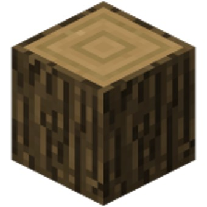
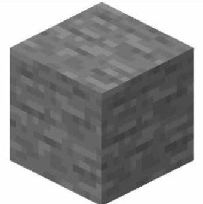
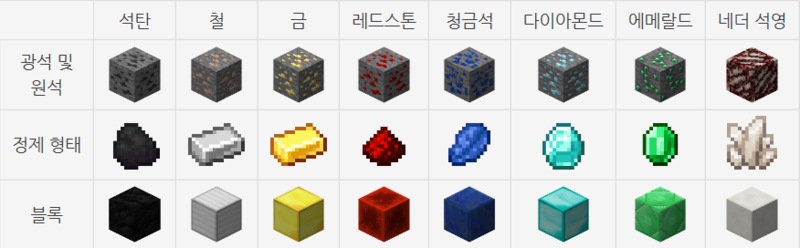

자연에서 얻을 수 있는 블록들
잔디블록

잔디 블록(Grass Block)은 오버월드 대부분의 생물군계의 지표면을 이루고 있으며, 생물군계에 따라 잔디의 색이 다르다는 특징을 가지고 있다.
생물군계 경계를 중심으로 단계적으로 색이 변하는 걸 볼 수 있다. 위에 눈이 쌓이면 잔디 색도 하얗게 변한다. 밝기 9 이상의 빛을 받고 있고,
그 잔디 블록 3x5x3 이내에 밝기 4 이상의 빛을 받고 있는 흙이 있을 경우, 해당 흙 블록은 잔디 블록으로 변한다.
활용법: 나무를 심거나 농사를 짓거나 아니면 여러 공장에 활용된다.
나무

목재 계열 블록들은 공통적으로 원목(Log)을 도끼로 우클릭해 껍질을 벗길 수 있으며, 같은 종류의 원목 4개를 조합하여 전체 면이 껍질로 구성된 '나무'로 만들 수 있고, 이를 도끼로 우클릭해서 역시 껍질을 벗길 수 있다. 그리고 껍질 유무와 상관없이 원목이나 나무 하나를 조합 창에 올리면 판자(Plank)가 된다. 나무 종류는 공통적으로 불에 탄다.
한편, 네더에는 나무를 대신해 자루, 사마귀 블록, 버섯불로 이뤄진 거대 버섯이 있다. 원목을 자루(Stem), '나무'를 균사(Hyphae)라고 칭하며 불에 타지 않는다는 특징을 가지고 있다. 보트를 제외한 대부분의 제작법을 나무와 공유한다.
활용법: 건축, 공장 등 거의 모든 분야에 사용된다.
돌

나무보다 더 단단하고 불에 타지 않는 건축 블록 군으로, 매끄러운(Smooth), 윤나는(Polished), 조각된(Chiseled) 등과 같이 다양한 파생 블록이 있으며, 대부분의 석재 블록들은 계단과 반 블록 외에도 담장(Wall)을 만들 수 있다.
계단과 반 블록, 담장의 제작법은 다음과 같다. 이 제작법 외에도 석재 절단기를 이용해 더욱 쉽고 효율적인 제작이 가능하다.
활용법: 나무와 같이 여러 분야에 사용되며 마크 초반에 많이 쓰는 블럭이다.
광석 계열

주요 지하 자원들로 만들 수 있다. 이 중 철, 금, 네더라이트는 주괴 형태가 재료이다. 다시 원재료로 분해가 가능하다.
블록별 특징을 서술하면 다음과 같다. 이 중에서 건축이나 보관 이외에 다른 쓰임새가 없는 것은 청금석 블록 하나뿐이다.
- 석탄 - 연료로 사용시 10분 동안 지속된다. 이는 재료 보다 한개 더 많은 분량을 태워준다.
- 철 - 철 골렘을 만들거나 신호기를 이루는 블록으로 사용할 수 있다.
- 금 - 아이템으로 드롭 시 피글린들이 관심을 보이는 아이템 중 하나이며 신호기를 이루는 블록으로 사용할 수 있다. 파괴 시 근처에 있는 피글린들을 자극한다.
- 다이아몬드, 에메랄드 - 신호기를 이루는 블록으로 사용할 수 있다.
- 네더라이트 - 아이템 상태에서 용암, 불에 의해 제거되지 않으며 신호기를 이루는 블록으로 사용할 수 있다.
활용법: 나무와 같이 여러 분야에 사용되며 마크 초반에 많이 쓰는 블럭이다.
출처:
이미지: